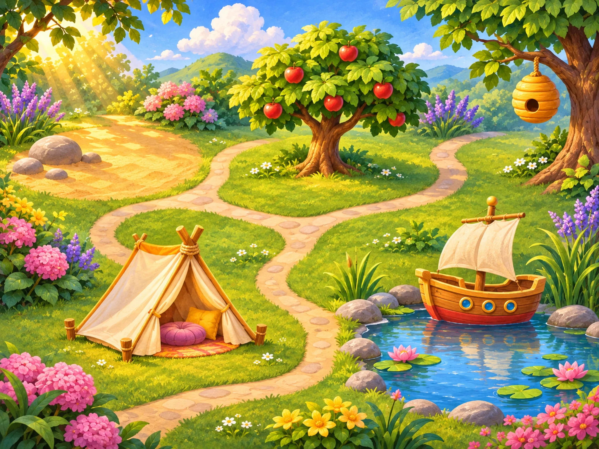

Sound Garden
Choose any sound place

Every place is open. Wander, listen and come back whenever you like.
Choose any sound place

Every place is open. Wander, listen and come back whenever you like.
Every voice here is AI-generated. None is a recording of a real person.
The garden needs a moment. Please try again.